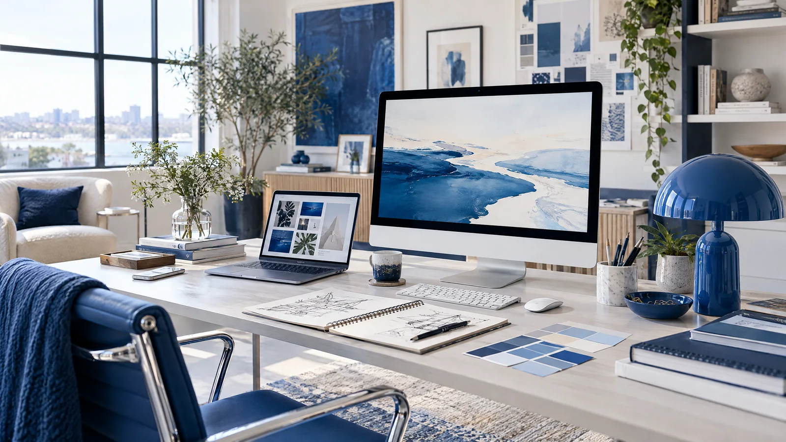
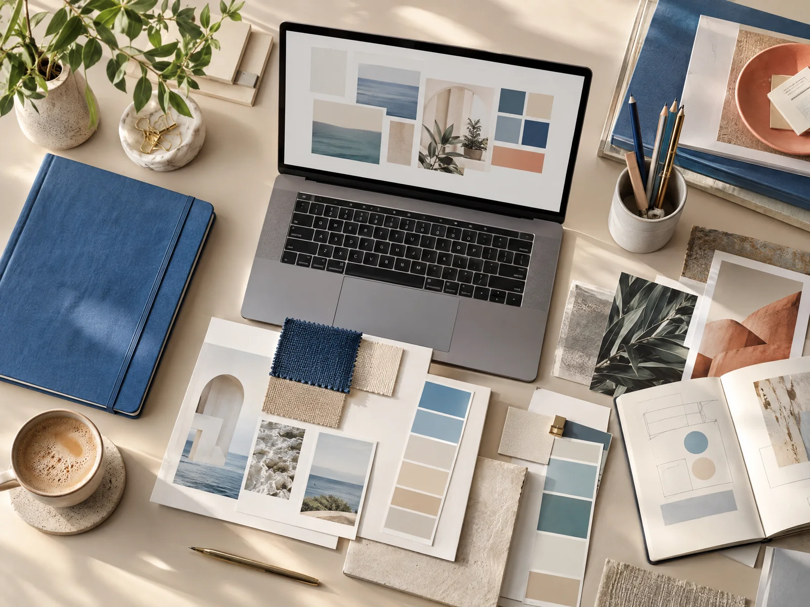
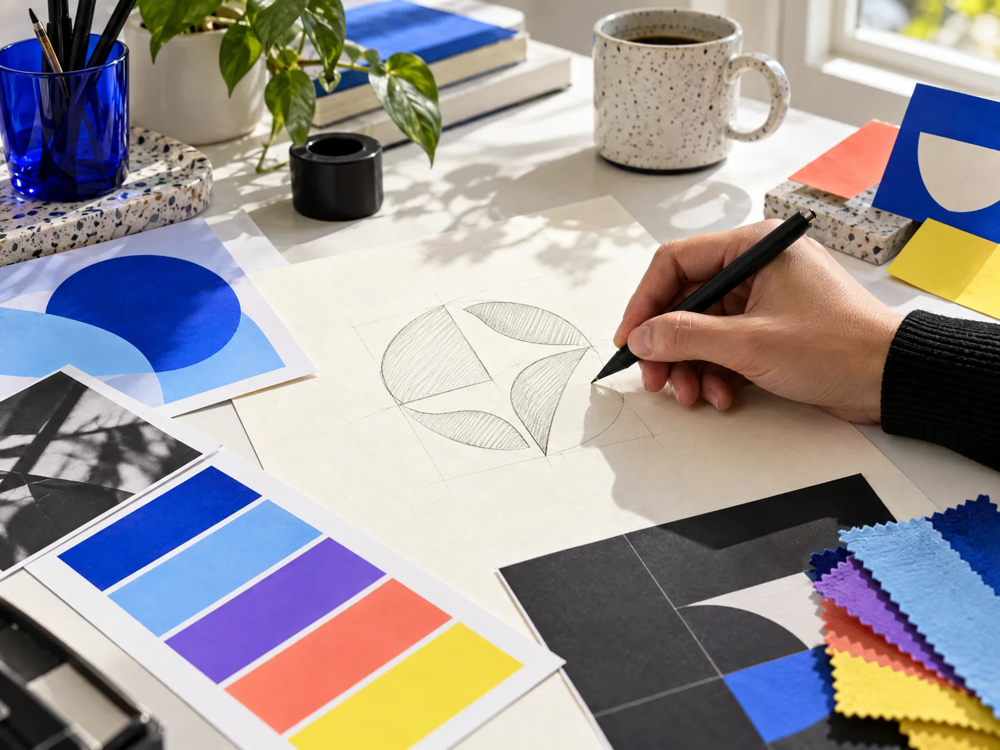
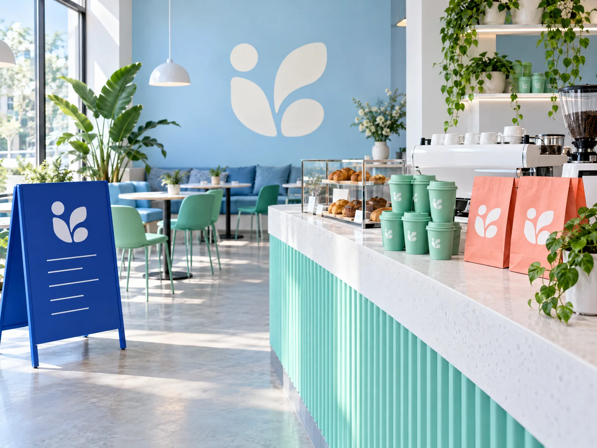
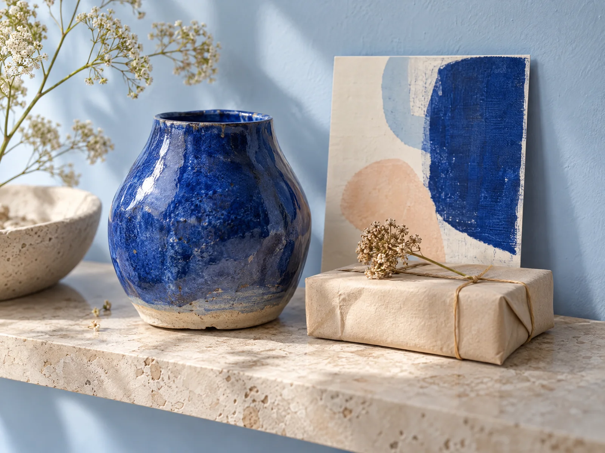
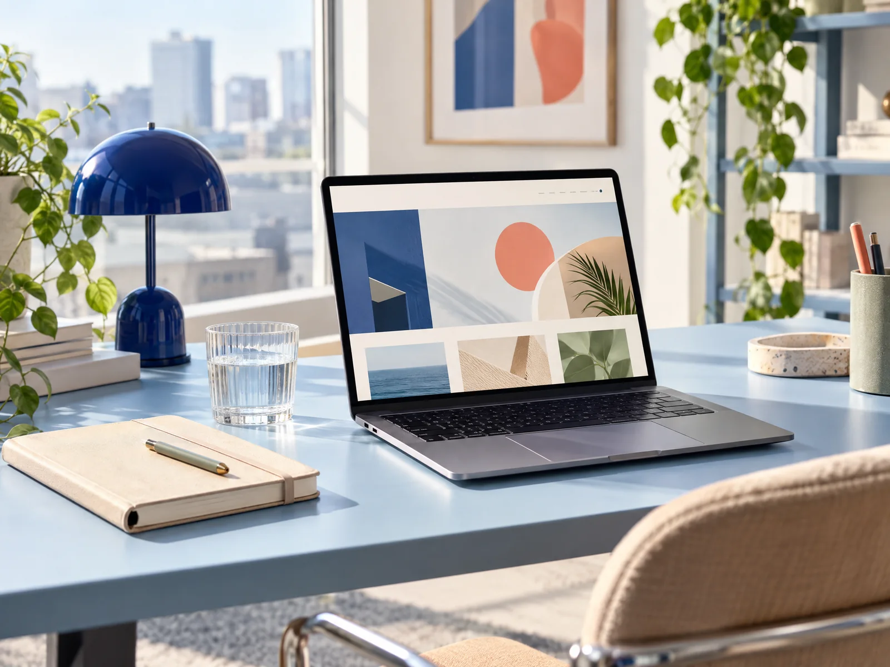

Una mirada estratégica
Antes de diseñar, entendemos tus objetivos, tu público y lo que hace diferente a tu proyecto.
Creamos identidades visuales, piezas gráficas y experiencias digitales para que tu negocio se vea auténtico, profesional y fácil de recordar.

Unimos estrategia, diseño y acompañamiento cercano para que tu marca conecte y crezca.
Mira cómo el símbolo de Olympus cobra vida.
Una animación breve transforma el nombre en una identidad con carácter.
Antes de diseñar, entendemos tus objetivos, tu público y lo que hace diferente a tu proyecto.
Creamos propuestas visuales atractivas, ordenadas y pensadas para funcionar en la vida real.
Te acompañamos desde la primera idea hasta las piezas que necesitas para comunicarla.
Desde una identidad visual sólida hasta una experiencia digital clara: elige un punto de partida y construyamos lo que sigue.

01 · DESCUBRIRReunimos objetivos, referencias y personalidad para encontrar una dirección con sentido.

02 · DISEÑARConstruimos un lenguaje visual propio y cuidamos los detalles de cada pieza.

03 · APLICARTrasladamos la identidad a piezas y canales para que cada punto de contacto cuente la misma historia.
Diseñamos una identidad que te representa y ayuda a recordar lo que ofreces.
Del concepto a cada detalle, creamos una marca clara, cercana y lista para crecer.

